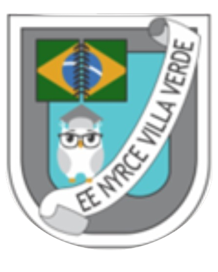

Esta página foi desenvolvida para a disciplina de HTML e CSS no ano de 2026, sob a orientação do professor Marcelo Padilha.
O objetivo deste site é buscar e apresentar de forma estruturada todo o meu desenvolvimento pessoal e acadêmico, utilizando os recursos de hipermídia aprendidos ao longo do curso.